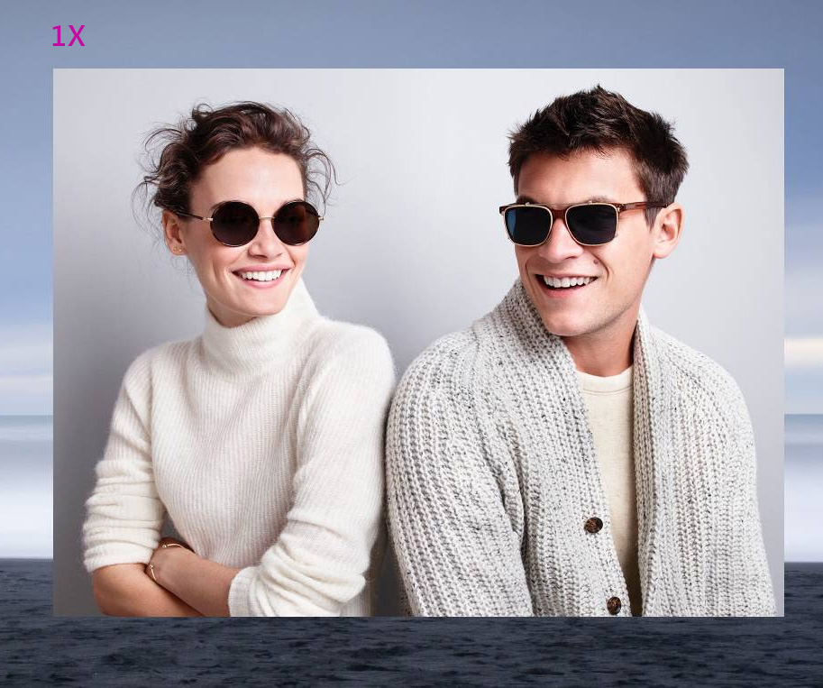

Device pixel ratio based selection
src \ srcset \ x 在 img 标签上。[ src 参与资源选择 ]
Note: 当图像的渲染尺寸依赖视口宽 (viewport-based selection) 时，描述器 x 此时不起作用
Demo

Viewport based selection
srcset \ sizes \ w \ src 在 img 标签上。[ src 参与资源选择 ]
Note: 当图像的渲染尺寸依赖视口宽 (viewport-based selection) 时，描述器 x 此时不起作用
Demo